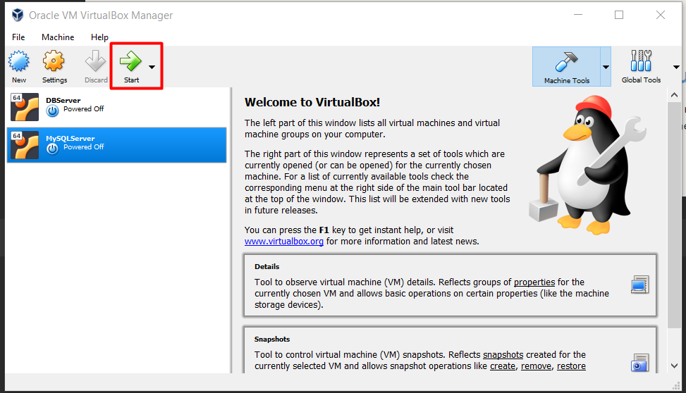
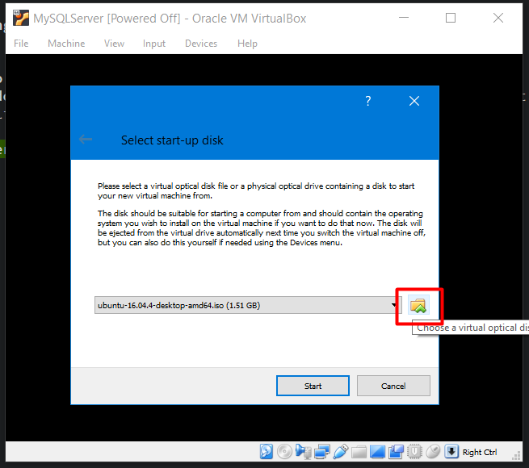
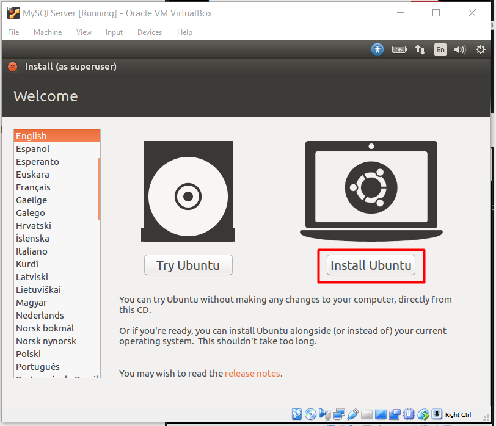
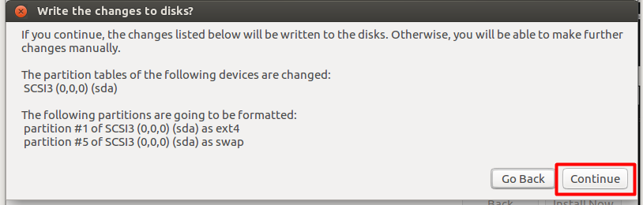
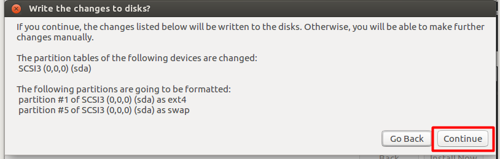
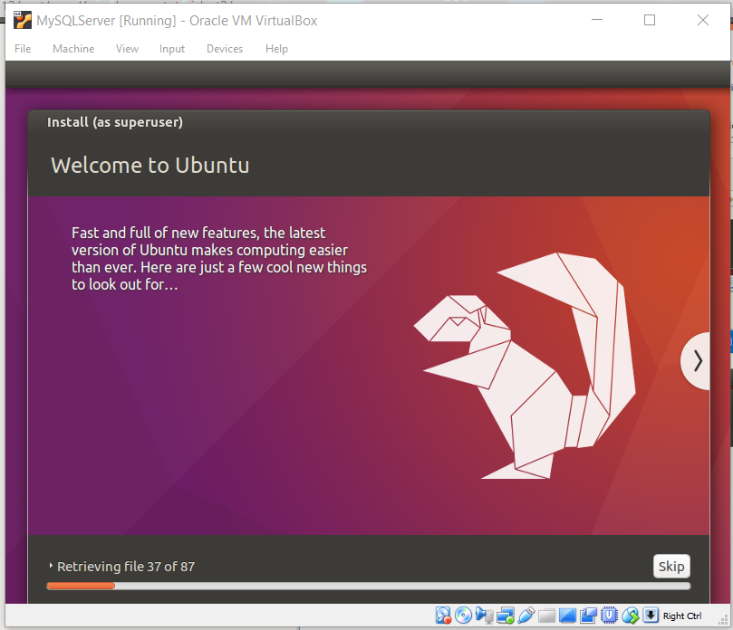

Part 2: Installing Ubuntu
With out virtual machine ready to be fired up thanks to part 1, we are now ready to begin installing Ubuntu. If you don't have VirtualBox open, go ahead and do so now. Highlight the VM that we just set up and click Start

Okay I lied. There's actually one last step we need to do and that's specify the location of our Ubuntu ISO file that we downloaded earlier. Click the little folder icon next to the drop down and locate the ISO file.

Now we are ready to begin! Click Start and let the VM do it's thing.

If everything worked accordingly, you'll be taken to the install screen for Ubuntu. Go ahead and select Install Ubuntu

Both of these options are up to you, but I recommend selecting the checkbox next to Download updates…

While this page may seem a little scary due to the warning don't worry as the VM only has access to the small partition that we created for it earlier. In no way will it harm your actual OS.
Since this server will only be used for development we won't be encrypting it as it will never be publicly accessible. Select Install Now, then Continue on the popup that appears.
 

If the timezone selected by default isn't yours, go ahead and update it to correctly
reflect your location and hit Continue.

Pick your keyboard layout. If your unsure, you probably just want the default. If your window is
cut off like mine try dragging it via the top gray portion. Ubuntu doesn't seem to like
such a small display of 800x600 pixels.

The last step! Fill out all of the fields, and then hit Continue.

Ubuntu will now begin to install itself onto the VM. Sit back and hold tight for a bit while it does it's thing.

Once Ubuntu has completed installing you'll be prompted to perform a restart. Hit Restart Now.

You don't actually have to remove anything when this appears. Just hit Enter.

Once rebooted, go ahead and log into your account. Your now ready for part 3!